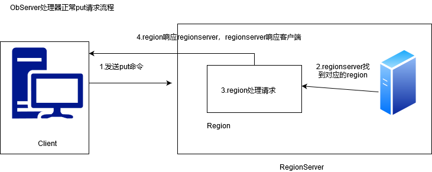
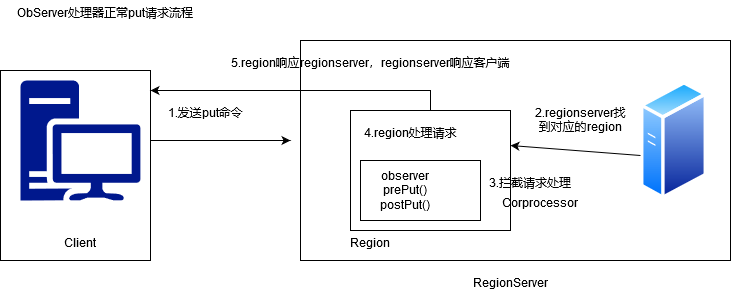

简介 Hbase作为列族数据库最经常被人诟病的特性包括：无法轻易建立“二级索引”，难以执行求和、计数、排序等操作。
1 比如，在旧版本的(<0.92)Hbase 中，统计数据表的总行数，需要使用 Counter 方法，执行一次 MapReduce Job 才能得到。虽然HBase在数据存储层中集成了MapReduce，能够有效用于数据表的分布式计算。然而在很多情况下，做一些简单的相加或者聚合计算的时候，如果直接将计算过程放置在server端，能够减少通讯开销，从而获得很好的性能提升。于是，HBase 在 0.92 之后引入了协处理器(coprocessors)，实现一些激动人心的新特性：能够轻易建立二次索引、复杂过滤器(谓词下推)以及访问控制等。
协处理器分类 协处理器有两种:
Observer Observer 类似于传统数据库中的触发器，当发生某些事件的时候这类协处理器会被 Server 端调用。Observer Coprocessor 就是一些散布在 HBase Server 端代码中的 hook 钩子， 在固定的事件发生时被调用。比如：put 操作之前有钩子函数 prePut，该函数在 put 操作执行前会被 Region Server 调用；在 put 操作之后则有 postPut 钩子函数
hbase0.92版本后，常见的Observer接口有：
1 2 3 4 - RegionObserver：针对Region的观察者，可以监听关于Region的操作 - RegionServerObserver：针对RegionServer的观察者，可以监听关于RegionServer的操作 - WALObserver：针对WAL的观察者，可以监听关于WAL的操作 - MasterObserver：针对Master的观察者，可以监听关于Master的操作
1） 普通的put请求流程

2） 加入Observer协处理器的put请求流程

1 2 3 4 5 6 1 客户端发出put请求 2 请求被分派给合适的RegionServer和Region 3 coprocessorHost拦截请求，然后在该表上登记的每个RegionObserver上调用prePut方法 4 如果没有被prePut拦截，请求就继续送到region，然后进行处理 5 region产生了处理后的结果再次被coprocessor拦截，调用postPut方法 6 假设没有被postPut拦截响应，最终结果就返回给客户端
3) Observer的类型
1 2 3 RegionObserver : 此组件勾在数据访问和操作阶段，所有标准的数据操作命令都可以被pre-hooks和post-hooks拦截 WALObserver : WAL所支持的Observer，可用的钩子是pre-WAL和post-WAL MasterObserver : 勾住DDL事件，如表创建
endpoint Endpoint 协处理器类似传统数据库中的存储过程，客户端可以调用这些 Endpoint 协处 理器执行一段 Server 端代码，并将 Server 端代码的结果返回给客户端进一步处理，最常见 的用法就是进行聚集操作。如果没有协处理器，当用户需要找出一张表中的最大数据，即 max 聚合操作，就必须进行全表扫描，在客户端代码内遍历扫描结果，并执行求最大值的 操作。这样的方法无法利用底层集群的并发能力，而将所有计算都集中到 Client 端统一执行， 势必效率低下。利用 Coprocessor，用户可以将求最大值的代码部署到 HBase Server 端，HBase 将利用底层 cluster 的多个节点并发执行求最大值的操作。即在每个 Region 范围内执行求最 大值的代码，将每个 Region 的最大值在 Region Server 端计算出，仅仅将该 max 值返回给客 户端。在客户端进一步将多个 Region 的最大值进一步处理而找到其中的最大值。这样整体 的执行效率就会提高很多
下图是 EndPoint 的工作原理：
总结 1 2 3 4 5 6 - Observer 允许集群在正常的客户端操作过程中可以有不同的行为表现 - Endpoint 允许扩展集群的能力，对客户端应用开放新的运算命令 - Observer 类似于 RDBMS 中的触发器，主要在服务端工作 - Endpoint 类似于 RDBMS 中的存储过程，主要在服务端工作 - Observer 可以实现权限管理、优先级设置、监控、ddl 控制、二级索引等功能 - Endpoint 可以实现 min、max、avg、sum、distinct、group by 等功能
协处理器+二级索引案例 1 2 3 4 5 6 7 8 9 10 11 12 13 14 15 16 17 1. create 'guanzhu','f1' rowkey: 用户名-明星名 column1: from:用户名 to:明星名 create 'fensi','f1' rowkey: to-明星名 s001:粉丝名 2. 需求:在向关注表插入数据时，通过协处理器向粉丝表(二级索引表)插入数据。 3. 继承BaseRegionObserver,重写prePut(.....) 4. 导出jar包，上传到集群上 5. 将协处理器挂载到关注表中 alter 'guanzhu',METHOD => 'table_att','coprocessor'=>'hdfs://qianfeng01:8020/jar/nz201_hbase-1.0-SNAPSHOT.jar|com.dante.hbase.coprocessor.FensiObServer|1001|' 6. 通过api向关注表模拟插入数据操作 7. 查询fensi表的数据。
1 2 3 4 5 6 7 8 9 10 11 12 13 14 15 16 17 18 19 20 21 22 23 24 25 26 27 28 29 30 31 32 33 34 35 36 37 38 39 40 41 42 43 44 45 46 47 48 package com.dante.hbase.coprocessor;import com.dante.hbase.util.HbaseUtil;import org.apache.hadoop.hbase.Cell;import org.apache.hadoop.hbase.CellUtil;import org.apache.hadoop.hbase.TableName;import org.apache.hadoop.hbase.client.Durability;import org.apache.hadoop.hbase.client.Put;import org.apache.hadoop.hbase.client.Table;import org.apache.hadoop.hbase.coprocessor.BaseRegionObserver;import org.apache.hadoop.hbase.coprocessor.ObserverContext;import org.apache.hadoop.hbase.coprocessor.RegionCoprocessorEnvironment;import org.apache.hadoop.hbase.regionserver.wal.WALEdit;import org.apache.hadoop.hbase.util.Bytes;import java.io.IOException;import java.util.List;public class FensiObServer extends BaseRegionObserver @Override public void prePut (ObserverContext<RegionCoprocessorEnvironment> e, Put put, WALEdit edit, Durability durability) throws IOException List<Cell> c1 = put.get(Bytes.toBytes("f1" ), Bytes.toBytes("from" )); String fans = new String(CellUtil.cloneValue(c1.get(0 ))); List<Cell> c2 = put.get(Bytes.toBytes("f1" ), Bytes.toBytes("to" )); String star = new String(CellUtil.cloneValue(c2.get(0 ))); Table table = HbaseUtil.getTable("fensi" ); Put newput = new Put(Bytes.toBytes("to-" +star)); newput.addColumn(Bytes.toBytes("f1" ),"s1" .getBytes(),fans.getBytes()); table.put(newput); HbaseUtil.closeTable(table); } }
协处理加载方式 协处理器的加载方式有两种，我们称之为静态加载方式（Static Load）和动态加载方式 （Dynamic Load）。静态加载的协处理器称之为 System Coprocessor，动态加载的协处理器称 之为 Table Coprocessor。
11.3.1 静态加载
1 2 3 4 5 6 7 8 通过修改 hbase-site.xml 这个文件来实现，启动全局 aggregation，能过操纵所有的表上 的数据。只需要添加如下代码： <property> <name>hbase.coprocessor.user.region.classes</name> <value>类全名</value> </property> 可以用”,”分割加载多个 class
11.3.2 动态加载
1 2 3 4 5 6 只对特定的表生效。通过 HBase Shell 来实现。 1. 停用表 disable 'mytable' 2. 添加协处理器 alter 't_guanzhu',METHOD => 'table_att','coprocessor'=>'hdfs://supercluster/jar/mycoprocessor.jar|com.dante.hbase.coprocessor.MyIndexCoprocessor|1001|' 3. 启用表 enable 'mytable'
11.3.3 协处理器卸载。同样是3步
1 2 3 1. disable 'mytable' 2. alter 'mytable',METHOD=>'table_att_unset',NAME=>'coprocessor$1' 3. enable 'mytable'

This is copyright.